Oito jeitos de brincar
com os mesmos logos
Os 11 logos 3D ficam exatamente como são (as imagens abaixo são recortes deles). O que muda é o "brinquedo" onde eles moram e o gesto para descobrir cada um. Ao pegar um logo, a etiqueta de papel do site mostra nome, área e descrição.
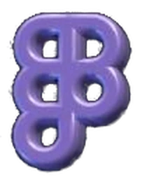
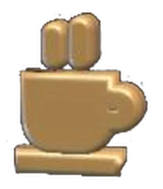
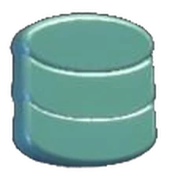
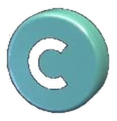
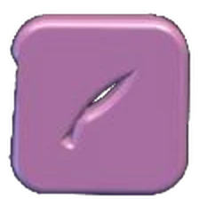
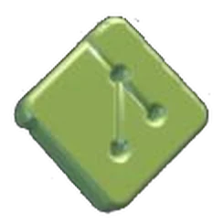
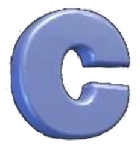
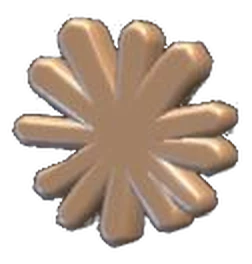
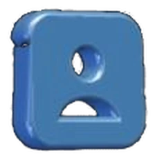
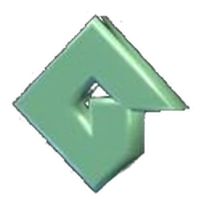
IAClaude
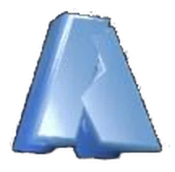
CÁPSULA 07/11Nomad Sculpt
minhas ferramentas
pop!
DESIGN
CÓDIGO
3D
IA